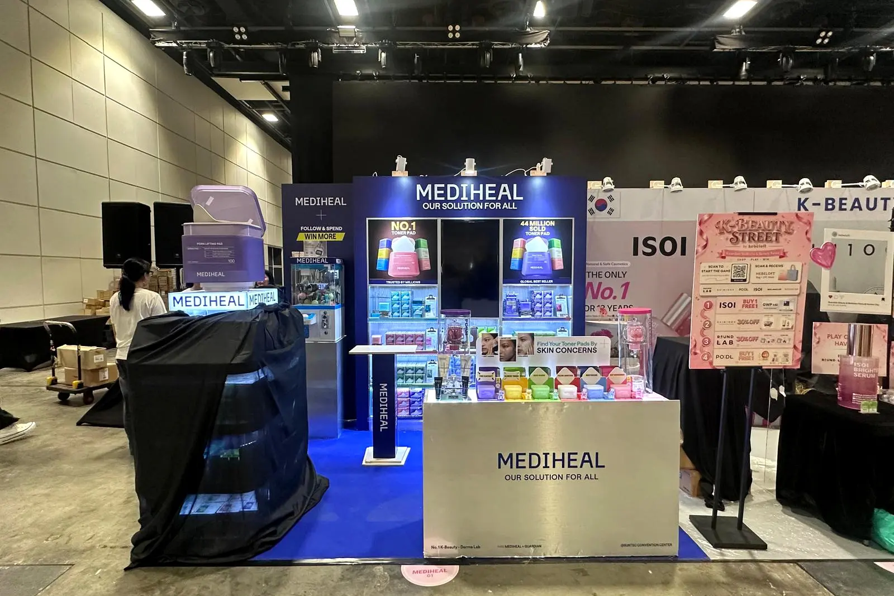
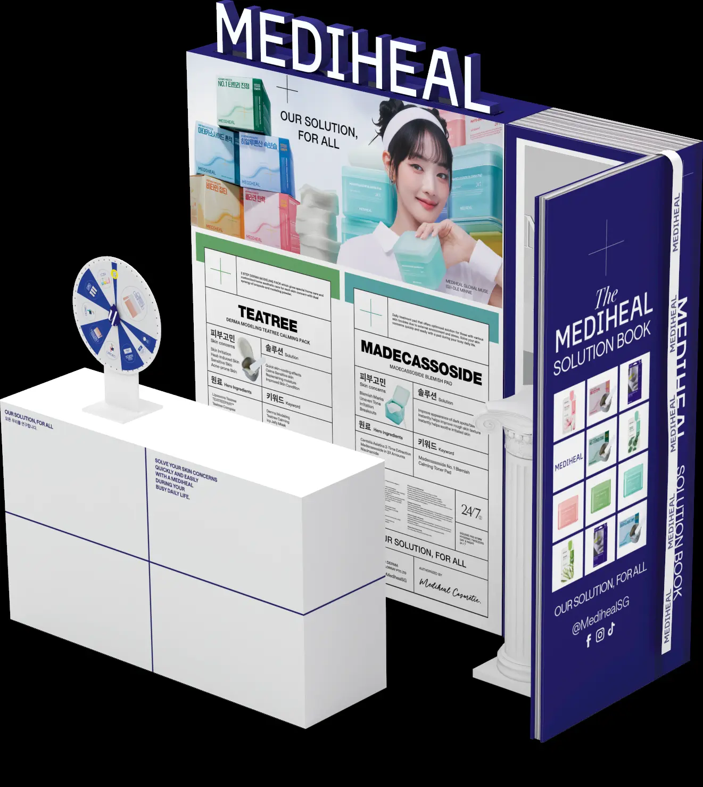
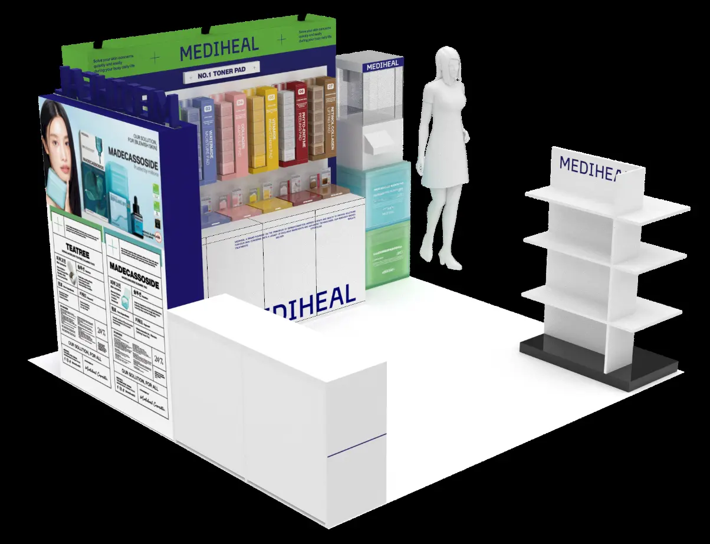
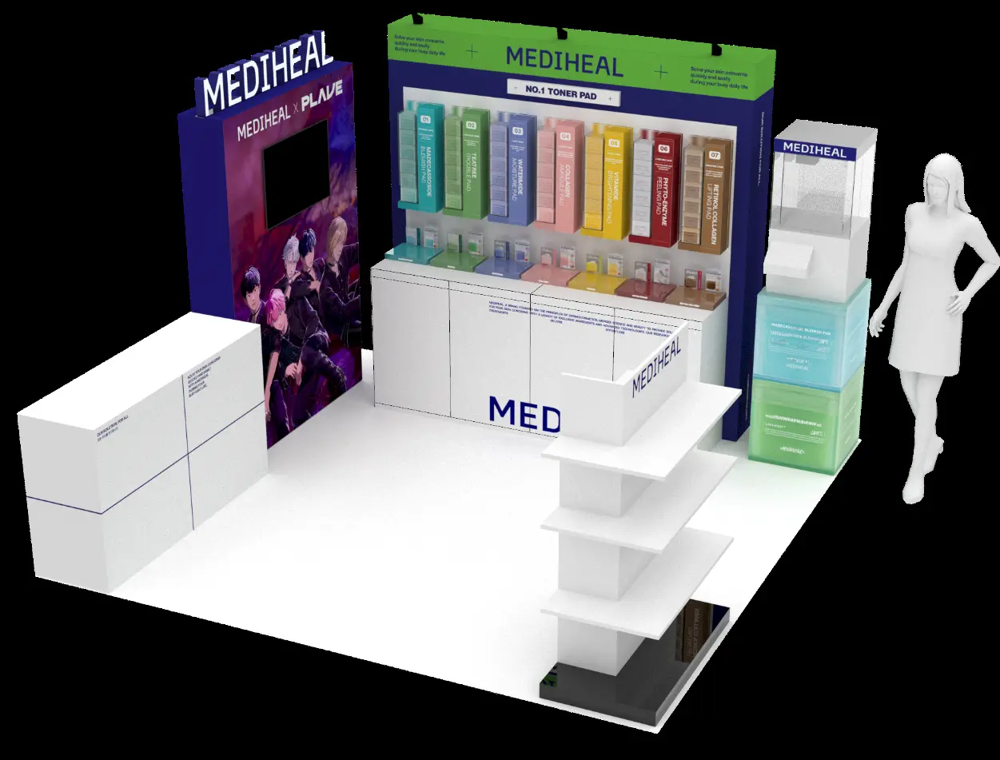
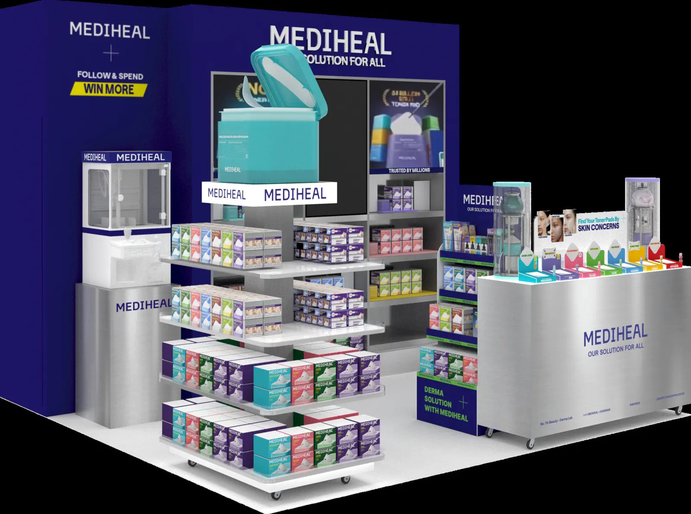

MEDIHEAL · SINGAPORE · 2024–2026
Beauty Around
the World
A three-year evolution of a compact 3 × 3 metre booth, translating Mediheal's premium Korean showcase language into a practical Singapore format.

DESIGN STRATEGY
Each edition balances strong brand presence, product education and visitor interaction with efficient fabrication, modular components and selective reuse.



